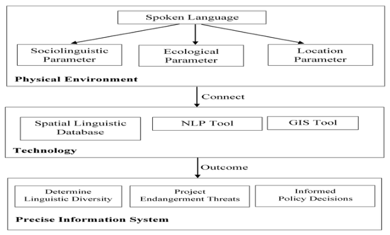

RAIL 2021Traduction automatique
Une méthode novatrice pour redéfinir l'écologie linguistique et la menace de disparition des langues au Nigeria - vers une solution géospatiale
Traduction automatique, non relue par un humain. L'article original est la version de référence ; les phrases soulignées sont celles dont les contrôles automatiques n'étaient pas sûrs.
Proceedings of the 2nd Workshop on Resources for African Indigenous Languages (RAIL 2021), Journal of the Digital Humanities Association of Southern Africa.
Traduction par Ernst van Gassen (Arktos AI Lab), sous licence CC BY-SA 4.0 comme l'original. Réutilisation permise avec attribution ; partage des adaptations dans les mêmes conditions. Les auteurs originaux n'ont pas relu ni approuvé cette traduction.
Texte brut réutilisable, avec sa licence : Français · LICENCE
Affiliations
Udoh, Imelda University of Uyo Ekpenyong, Moses University of Uyo Urua, Eno-Abasi University of Uyo Adeniyi, Harrison Lagos State University Obiamalu, Greg Nnamdi Azikiwe University Yusuff, Ayo University of Lagos
Anyanwu, Ogbonna University of Uyo Obikudo, Ebitare University of Port Harcourt
Adresses e-mail retirées pour la protection de la vie privée. Elles figurent dans le PDF original.
Résumé
Étant une nation multilingue et multiculturelle, le Nigeria est béni avec plus de 525 langues (Blench, 2014) de quatre familles de langues différentes. Le nombre impressionnant de langues autochtones forme une tapisserie fascinante ! Malheureusement, peu d'attention a été accordée à l'étude de nos langues autochtones, avec toutes les perspectives abondantes. Ce document est un travail en cours et un projet de recherche récemment financé par le Tertiary Education Trust Fund (TETFund) du Nigeria, pour remédier à la menace qui pèse sur les langues au Nigeria en redéfinissant l'écologie des langues par le biais des technologies géospatiales; en se concentrant sur les langues situées dans la partie sud du Nigeria, et extensible à d'autres régions du Nigeria et au-delà. L'objectif principal du projet est de mettre en œuvre une infrastructure ou un cadre sensible à la localisation qui fonctionne de manière proactive en temps réel, pour une écologie linguistique améliorée, et une visualisation précise de l'état de vitalité de chaque langue parlée dans la région étudiée. Le projet rassemble une équipe multidisciplinaire composée de linguistes et d'experts en langues, de scientifiques informatiques et de spécialistes des systèmes d'information géographique (SIG), pour examiner notre écologie linguistique à travers des travaux de terrain pratiques et l'intégrer dans un cadre géospatial dans le but de revitaliser nos langues indigènes et de les rendre facilement disponibles. Ce projet de recherche est donc significatif car il ne fournira pas seulement une solution coopérative pour faire avancer notre compréhension du modèle spatial qui décrit l'écologie des langues, mais aussi une évaluation précoce du degré de vitalité et de danger en relation avec des facteurs tels que les changements sociaux et culturels. L'impact immédiat est la revitalisation rapide de nos langues autochtones et l'élaboration d'une politique linguistique efficace pour renforcer notre patrimoine local.
Mots-clés
Langues nigérianes, statut de mise en danger, base de données géolinguistique, cadre géospatial, application d'écologie linguistique, système basé sur la localisation
1 Introduction
La mise en péril d'une langue peut être décrite comme un processus par lequel la vitalité d'une langue (c'est-à-dire la mesure dans laquelle la langue est utilisée comme moyen de communication dans divers contextes sociaux et dans des domaines ou à des fins spécifiques) n'est plus poursuivie par les « propriétaires » de la langue ou de la communauté linguistique, ce qui entraîne une menace de désuétude ou d'abandon de la langue. La mise en péril peut être causée par des facteurs naturels (guerres, tremblements de terre, etc.) ou par des facteurs sociaux (p. ex. abandon). Aujourd'hui, plusieurs langues nigérianes sont progressivement en voie d'extinction parce que de nombreux locuteurs de la langue ont soit abandonné leurs langues pour d'autres langues ou ont négligé la responsabilité fondamentale de développer leurs langues pour soutenir le transfert intergénérationnel (c'est-à-dire, l'incapacité de transférer la langue d'une génération à l'autre),
L’état de mise en danger d’une langue peut être classé en cinq niveaux comme suit (Udoh et Urua, 2015 après Connell 1994) :
- Moribundes - ne sont plus utilisées, ni transmises, ou sont menacées.
- Reculant - mourant dans une zone mais florissant dans une autre zone : frontières inter-pays.
- Sous-développé - sans orthographes, littérature écrite, méta-langage.
- En développement - avec des orthographes assez développées, et dont la tradition littéraire et la méta-langue sont en cours de développement.
- Infiltré ou pidgin (Blench, Spriggs et Connell 1999) - principalement utilisé dans les conversations informelles.
L'intégrité d'une langue est encore renforcée lorsque son statut pénètre significativement de nouveaux domaines, se développe en langue de la classe éduquée et adopte de nouvelles valeurs sociétales (Urua et Ekpenyong, 2018).
Divers indices permettent de déterminer l'état de mise en danger d'une langue. Les plus dominants incluent : le taux de croissance de la population ; la domination d'une langue plus puissante ou d'une langue ayant une plus grande influence économique ; et/ou, le manque de preuves descriptives adéquates de la langue, limitant ainsi le développement ou l'utilisation efficace de cette langue (cf. Bamgbose 1976 ; Fakuade 1999). Alors que le degré d'utilisation de la langue peut influencer la détermination de la menace sur la langue, les différentes variables agissent de manière variable pour améliorer la vitalité de la langue (Adewale et Oshodi, 2013).
Les intérêts pour la poursuite d'une solution spatiale au développement des infrastructures linguistiques ont grandement diminué. Alors que la plupart des études se concentrent sur l'utilisation des SIG pour les études littéraires (Kretzschmar, 2013), seulement trois études, à notre connaissance, sont situées dans le contexte de notre étude et sont discutées comme suit.
En 2009, le projet de géographie linguistique de la Thaïlande basé sur les SIG a été lancé sous le parrainage de l'Université Chulalongkorn avec pour objectif principal de promouvoir l'utilisation du système d'information géographique (SIG) en linguistique. Le projet a permis à des chercheurs de différents domaines de connaissances de travailler ensemble, en l'occurrence des géographes et des linguistes. Une série de travaux de recherche a été menée depuis lors. Le premier de la série était le travail de recherche du projet des cartes géographiques de mots de la Thaïlande, produisant une base de données géographique de 170 vocabulaires de dialectes thaïlandais basée sur la collecte de données en 2002-2003 (Teerarojanarat et Tingsabadh, 2008). Le second était le travail d'extension du premier projet - la création de la carte des limites des dialectes thaïlandais centraux et non centraux par superposition de 170 couches de carte (Teerarojanarat et Tingsabadh, 2011).
Un travail récent a été les cartes géographiques des mots du dialecte thaïlandais du nord-est. Dans ce travail, les vocabulaires dialectaux thaïlandais dans la région nord-est de la Thaïlande, basés sur la collecte de données en 1979, ont été convertis et transformés dans un environnement SIG pour être disponibles sur une carte numérique.
Dans Podobnikar et al. (2009), une détermination détaillée des zones de langage locales qui font partie de l'Atlas linguistique slovène (SLA) a été effectuée. Le SLA est un projet géolinguistique conçu dans les années 1930 et publié en 2010. L'un des objectifs de ce projet était d'analyser les zones d'impact et d'allouer géographiquement les données de parole locales pour une détermination plus précise des isoglosses. Diverses preuves qui ont influencé la formation du discours ont également été analysées avec le SIG, ce qui a donné des indicateurs intra-linguistiques et extra-linguistiques (c.-à-d. géographiques et historiques).
Alors que les travaux connexes précédents se concentrent sur des aspects de la production et de l'analyse de cartes, notre projet introduit une nouvelle intégration d'informations sensibles à la localisation ainsi que des détails sur les données qui déterminent la vitalité et le statut de menace des langues, afin de permettre le stockage, les mises à jour et la récupération d'informations spatiales en temps réel. L'objectif de l'introduction d'un système d'information spatial est de permettre une visualisation rapide des attributs linguistiques stockés, et d'améliorer les décisions politiques, au lieu de s'appuyer sur des informations tardives.
1.1 Le problème
Les langues nigérianes n'ont pas été suffisamment exploitées. Bien que quelques-unes d'entre elles se développent, plusieurs sont encore en danger de disparition et de mort. Les langues autochtones archivent les riches valeurs culturelles des peuples et les précieux systèmes de connaissances, qui sont importants pour le développement. La mort des langues entraîne la perte du riche patrimoine culturel du peuple. Beaucoup de ces langues ne sont pas vitales car elles sont utilisées dans des domaines plutôt restreints, et beaucoup ont même perdu le privilège du transfert intergénérationnel, une menace sérieuse pour les langues, leurs locuteurs et l'humanité. En outre, nous manquons d'informations correctes sur le nombre de langues, pour ne pas parler de mises à jour à leur sujet. Il n'existe pas de correspondance absolue biunivoque entre les langues et l'augmentation des données sur les langues dominantes sur le Web, car il semble exister une relation déséquilibrée entre les langues, alors que le niveau de menace de disparition s'aggrave sans que l'on s'en aperçoive. De plus, il n’existe pas de critères/modèles définis pour donner une image immédiate et précise (en temps réel) de la situation de ces langues et du moment où elles sont menacées.
Les méthodes d'archivage traditionnelles (par exemple, l'utilisation de supports statiques - textes, images non animées, cartes) ne pouvaient pas offrir un traitement et une visualisation en temps réel des ressources par le biais de services basés sur la localisation (ou spatiaux), car elles sont limitées par les opportunités de développement linguistique et d'internalisation. De plus, le fait de ne pas rendre les produits de la recherche à la communauté linguistique a provoqué une perte d’intérêt à les préserver et à les propager à l’avenir. Par conséquent, le besoin urgent de caractériser les connaissances et ressources linguistiques existantes, afin d'influencer de manière cruciale une éventuelle réutilisation ou abandon des structures et variétés linguistiques, est poursuivi dans ce projet.
1.2 Objectifs du projet
Les objectifs du projet incluent :
- Pour enquêter sur la vitalité et le niveau de menace des langues dans les 3 Zones du Sud du Nigeria en utilisant l'échelle de vitalité et de menace des langues (LVE) de l'UNESCO de 2003, afin d'extraire efficacement les connaissances.
- Étudier la relation entre les langues et leurs locuteurs et ancrer ces détails dans des géolocalisations précises.
- Pour développer un système de base de données spatiales des langues parlées dans les 17 États des 3 Zones Géopolitiques du Nigeria du Sud, avec des informations descriptives sur leur localisation, des nuages de points et des images satellites haute résolution.
- Intégrer les informations extraites sur le système spatial, en intégrant ou en cartographiant les attributs linguistiques importants, pour une visualisation en temps réel de la vitalité de la langue et de son état de menace.
2 Cadre conceptuel
Le cadre conceptuel proposé, tel que présenté dans la Figure 1, explique les concepts ou variables clés de l'étude et leurs relations. Il commence par l'environnement physique et relie la technologie pour un développement précis des systèmes d'information. Dans l'environnement physique, la principale variable de notre étude est le langage parlé, où les paramètres sociolinguistiques, écologiques et de localisation sont identifiables dans le but de construire :
- base de données linguistique spatiale (pour les requêtes et l'analyse basées sur la localisation)
- Traitement du langage naturel (NLP)
- développement d'outils (pour le développement linguistique et de modèles) et
- Outil SIG et base de données linguistiques (pour établir des modèles et des tendances naturelles qui documentent et traitent les ensembles de données spatiales disponibles ainsi que modélisent les relations qui existent entre eux).
Les résultats comprennent une connaissance précise de la diversité linguistique, une projection des menaces de mise en péril et une décision politique éclairée.
3 Méthodes
Ce projet sera mené dans les 3 Zones du Nigeria du Sud, composées de 17 États. Le projet sera multidisciplinaire et impliquera une collaboration tripartite entre le milieu universitaire (personnel et étudiants de diverses disciplines), l'association professionnelle (Association linguistique du Nigeria) et la communauté parlante. Pour permettre un suivi efficace du projet, des superviseurs et des coordinateurs seront nommés pour superviser/coordonner la collecte de données primaires et la formation dans les zones géopolitiques respectives.
Population de recherche: La population de recherche couvre le nombre de personnes dans une communauté qui seront visitées par les assistants de terrain dans chaque LGA, tel que fourni par le recensement de 2006.
Échantillon et Procédure d'Échantillonnage : un échantillonnage multi-étapes sera adopté. Une méthode d'échantillonnage systématique sera utilisée pour sélectionner les maisons, où chaque dixième maison sur le côté droit de la rue sera sélectionnée. Un échantillonnage aléatoire stratifié sera ensuite utilisé pour sélectionner parmi une gamme de répondants au sein des foyers - les personnes âgées, les jeunes, les hommes, les femmes, les enfants des ménages de la communauté.
Les données primaires: Les données primaires sont les langues parlées par les communautés dans les 355 zones de gouvernement local (LGA).
L'instrument de collecte de données: L'instrument LVE 2003 de l'UNESCO sera adapté pour être utilisé pour collecter les données primaires. Le questionnaire comporte trois composantes principales : les métadonnées, les données réelles et un indice de fiabilité. Une échelle de 5 points sera conçue pour obtenir des réponses des communautés dans les domaines suivants:
- Transmission intergénérationnelle des parents aux enfants
- Le nombre absolu de locuteurs par langue.
- La proportion de locuteurs au sein de la population totale.
- Perte de domaines linguistiques existants.
- Réponse aux nouveaux domaines et médias.
- Existence de matériaux pour l'éducation linguistique et l'alphabétisation.
- Les politiques des gouvernements et des institutions concernant les langues respectives.
- L'attitude des membres de la communauté envers leurs propres langues
- La quantité et la qualité de la documentation dont les langues ont bénéficié.
L'indice de fiabilité sur chacun de ces sujets couvrira :
- Preuves tirées du travail sur le terrain et de l'observation directe.
- Preuves provenant d'autres sources fiables.
- Très peu de preuves - une « meilleure supposition ».
- Aucune donnée disponible.

Figure 1. Cadre conceptuel proposé
Analyse des données primaires : Les réponses serviront à coder les éléments des questions dans le questionnaire. Ces réponses serviront à alimenter le SIG et l'évaluation statistique de l'écologie linguistique.
La méthodologie est divisée en 5 activités principales comme résumé ci-dessous :
Formation des coordinateurs/assistants de recherche/de terrain : Un atelier de formation sera organisé pour les coordinateurs, les assistants de recherche/de terrain et les étudiants impliqués dans le projet.
Travail de terrain : Les données pour l'étude seront collectées auprès de 355 LGAs dans les 17 États par le biais de travaux de terrain. Les données linguistiques et de localisation, y compris les renseignements sur les limites, seront recueillies, traitées et documentées comme indiqué ci-dessus.
Conception de base de données spatiales : une base de données linguistiques spatiales pour stocker les informations linguistiques et de localisation sera développée. Les étapes pour accomplir cette tâche comprennent (1) l'acquisition d'images satellites (carte de base) et l'étude de reconnaissance de la zone d'étude pour capturer des données de localisation pertinentes et l'établissement des limites de début et de fin, à l'aide d'un dispositif GPS; (2) l'identification et l'abstraction des caractéristiques pertinentes dans l'environnement d'étude.
Géomodélisation, cartographie SIG et conception de banc d'essai : la cartographie des informations linguistiques et de localisation sera réalisée à l'aide d'ArcGIS. Les étapes pour accomplir ce processus incluent (1) la superposition des données GPS sur la surface extraite après la numérisation de l'image. (2) modélisation et intégration de bases de données géographiques; (3) développement d'un prototype de système d'essai pour la visualisation d'ensembles de données d'essai.
Conception d'application d'écologie linguistique : L'interface utilisateur pour communiquer avec la base de données spatiale sera développée en utilisant le langage de programmation Python afin de permettre le stockage et la récupération d'informations en temps réel.
4 Résultats attendus
4.1 Sorties et résultats
Les résultats et les retombées de ce projet comprennent :
- Base de données géolinguistique open-source, pour un crowdsourcing communautaire efficace et la documentation des ressources linguistiques au Nigeria.
- Modèle de données linguistiques, pour l'intégration des caractéristiques linguistiques extraites dans les cartes haute définition.
- Application géospatiale (écologie linguistique) pour la visualisation en temps réel des ressources linguistiques disponibles, le suivi de la vitalité et du statut de menace des langues, la formulation efficace de politiques, un outil de référence éducative rapide et l'accès à l'échelle de la communauté.
- Publications et brevets de haute qualité, pour faire progresser la recherche linguistique sur l'écologie des langues, la documentation et la mise en danger
4.2 Diffusion
Les résultats du projet seront portés à l'attention des principaux intervenants par plusieurs voies. Il est prévu d'organiser une conférence internationale à cet effet. Un site web du projet sera également développé pour partager les réalisations du projet, les publications et autres ressources, notamment avec la communauté de recherche. Une application sera développée pour une utilisation par tous. Ces efforts contribueront à redéfinir l'écologie linguistique de nos communautés ainsi qu'à améliorer la vitalité de ces langues.
4.3 Impact prévu
L'impact immédiat de ce projet sera une redéfinition de l'approche de la préservation et de la revitalisation des langues nigérianes, surtout celles en danger. L'approche proposée renforcera la vitalité de nos langues, améliorera leur écologie et endiguera la marée de leur mort. Technologiquement, ce projet permettra de :
- (1) améliorer l'investigation et la quantification du changement linguistique au sein des groupes de locuteurs ;
- (2) fournir une analyse détaillée et une trace des changements et des contacts linguistiques;
- (3) encourager la contribution communautaire de ressources linguistiques.
- Pour atteindre une participation/contribution communautaire efficace, l'application proposée sera open source, avec des droits d'accès pour manipuler les données. De plus, les ressources peuvent être déposées à des emplacements mappés et récupérées de ces mêmes emplacements en temps réel.
Avec un riche référentiel rendu possible par les contributions de la communauté, une analyse spatio-temporelle du langage est possible.
L'impact à long terme du projet est qu'il aidera à la formulation et à la mise en œuvre des politiques, et contribuera grandement à la politique linguistique, ainsi qu'à confirmer les langues parlées dans les LGAs.
5 Conclusion
Le SIG a trouvé son utilité dans la documentation des langues du monde, mais son application est encore en évolution. L’approche multidisciplinaire pour redéfinir l’écologie linguistique proposée dans ce projet est innovante, car elle intègre la technologie pour remodeler notre perception vers une solution proactive au problème de la mise en péril, qui a été réalisée jusqu’à présent par le biais de travaux de terrain intensifs, dont certains semblent incohérents. La solution que cette proposition présentera permettra aux efforts communautaires de développer des ressources linguistiques et pourrait être étendue aux trois autres zones du Nigeria du Nord et au-delà. L'application Ecology intégrera des descriptions de la culture, de la politique et de la diversité de la langue pour une visualisation efficace ; permettant ainsi une solution rentable aux crises linguistiques actuelles au Nigeria.
Remerciements
Ce projet de recherche est financé par le Tertiary Education Trustfund (TETFund), Nigeria, subvention du Fonds national de recherche (NRF) 2020.
Références
Adewale, R. K, Oshodi, B, 2013. Language Endagerment in Nigeria: Focus on Small Ethnolinguistic Communities in Niger State. Dialectologia, 11 (2013), 17-45.
Bambose, A (ed.), 1976. Mother Tongue Education: The West African Experience, London: Hodder and Stoughton.
Blench, R. M, Spriggs, M, Connell, B (eds.), 1999. The languages of Africa: Macrophyla proposals and implications for archaeological interpretation. Archaeology and Language 4. London: Routledge.
Connell, B., 1994. The Lower Cross Languages: A Pronegomena to the classification of the Cross River languages. Journal of West African Languages. XXIV, 1: 3-46.
Connell, B. 1998. Moribund languages of the Nigeria-Cameroon Borderland. Endangered languages in Africa. (Ed.) Brenzinger, M. Cologne: Koppe, 207-225.
Blench, R. M., 2014. An Atlas of Nigerian Languages. Oxford: Kay Williamson Educational Foundation.
Fakuade, G, 1999. Language Endangerment in the North-Eastern Part of Nigeria: Instances Language Empowerment: Theory and Reality, Aba: National Institute for Nigerian Languages, 50-66.
Haruna, A., 1998. Language death: The case of Bubbure in Southern Bauchi Area, Northern Nigeria.' Endangered languages in Africa. (Ed.) Brenzinger, M. Cologne: Koppe. Pp 227-251.
Kretzschmar, W.A., 2013. GIS for language and literary study. In: Siemens, R. and Price, K. (eds.) Literary Studies in the Digital Age: An Evolving Anthology. Modern Language Association: New York, NY, USA.
Podobnikar, T., Skofic, J. and Horvat, M., 2009. Mapping and analysing the local language areas for Slovenian linguistic atlas. In Cartography in Central and Eastern Europe (pp. 361-382). Springer, Berlin, Heidelberg.
Teerarojanarat, S. and Tingsabadh, K., 2011. Using GIS for linguistic study: a case of dialect change in the northeastern region of Thailand. Procedia-Social and Behavioral Sciences, 21, pp.362-371.
Udoh, I., Urua, E-A., 2015. Sustaining Nigerian Languages Through Use, Technology and Education Education in the 21 st Century: A Festschrift in Honour of Professor Mrs. Comfort Ekpo, Urua, E., Udofot, I. M. & Uduk, H., University of Uyo, Uyo, pp. 62-73.
Urua, E-A., Ekpenyong, M, 2018, Strengthening Language Documentation in Africa through Effective Cooperative Research. In: Leonard, J. L. and Rialland, A. (eds). Linguistique Africaine - Perspectives Croisees. Journees scientifiques de la societe de linguistique de paris, 113-142.
English et Français
A novel method for redefining language ecology and endangerment in Nigeria : – towards a geospatial solution
Une méthode novatrice pour redéfinir l'écologie linguistique et la menace de disparition des langues au Nigeria - vers une solution géospatiale
Affiliations
Udoh, Imelda University of Uyo Ekpenyong, Moses University of Uyo Urua, Eno-Abasi University of Uyo Adeniyi, Harrison Lagos State University Obiamalu, Greg Nnamdi Azikiwe University Yusuff, Ayo University of Lagos
Anyanwu, Ogbonna University of Uyo Obikudo, Ebitare University of Port Harcourt
Affiliations
Udoh, Imelda University of Uyo Ekpenyong, Moses University of Uyo Urua, Eno-Abasi University of Uyo Adeniyi, Harrison Lagos State University Obiamalu, Greg Nnamdi Azikiwe University Yusuff, Ayo University of Lagos
Anyanwu, Ogbonna University of Uyo Obikudo, Ebitare University of Port Harcourt
Abstract
Résumé
Being a multilingual and multicultural nation, Nigeria is blessed with over 525 languages (Blench, 2014) from four different language families. The sheer number of indigenous languages makes an interesting tapestry! Unfortunately, not much attention has been paid to the study of our indigenous languages, with all the abundant prospects. This paper is a work in progress and a recently funded research project by the Tertiary Education Trust Fund (TETFund) of Nigeria, to rescue language endangerment in Nigeria by redefining the ecology of languages through geospatial technologies; concentrating on those languages located in the southern part of Nigeria, and scalable to other regions of Nigeria and beyond. The main objective of the project is to implement a location-aware infrastructure or framework that functions proactively in real-time, for enhanced language ecology, and precise visualization of the language's vitality status for each language spoken in the region under study. The project draws a multidisciplinary team consisting of linguists and language experts, computational scientists, and geographical information system (GIS) specialists, to examine our language ecology through practical fieldwork and integrate same into a geospatial framework for the purpose of revitalizing our indigenous languages and making them readily available. This research project is therefore significant as it will not only provide a cooperative solution for advancing our understanding of the spatial pattern that describes language ecology, but also provide an early appraisal of the degree of vitality and endangerment in relation to factors such as social and cultural changes. The immediate impact is the prompt revitalization of our indigenous languages and the development of an effective language policy to strengthen our local heritage.
Étant une nation multilingue et multiculturelle, le Nigeria est béni avec plus de 525 langues (Blench, 2014) de quatre familles de langues différentes. Le nombre impressionnant de langues autochtones forme une tapisserie fascinante ! Malheureusement, peu d'attention a été accordée à l'étude de nos langues autochtones, avec toutes les perspectives abondantes. Ce document est un travail en cours et un projet de recherche récemment financé par le Tertiary Education Trust Fund (TETFund) du Nigeria, pour remédier à la menace qui pèse sur les langues au Nigeria en redéfinissant l'écologie des langues par le biais des technologies géospatiales; en se concentrant sur les langues situées dans la partie sud du Nigeria, et extensible à d'autres régions du Nigeria et au-delà. L'objectif principal du projet est de mettre en œuvre une infrastructure ou un cadre sensible à la localisation qui fonctionne de manière proactive en temps réel, pour une écologie linguistique améliorée, et une visualisation précise de l'état de vitalité de chaque langue parlée dans la région étudiée. Le projet rassemble une équipe multidisciplinaire composée de linguistes et d'experts en langues, de scientifiques informatiques et de spécialistes des systèmes d'information géographique (SIG), pour examiner notre écologie linguistique à travers des travaux de terrain pratiques et l'intégrer dans un cadre géospatial dans le but de revitaliser nos langues indigènes et de les rendre facilement disponibles. Ce projet de recherche est donc significatif car il ne fournira pas seulement une solution coopérative pour faire avancer notre compréhension du modèle spatial qui décrit l'écologie des langues, mais aussi une évaluation précoce du degré de vitalité et de danger en relation avec des facteurs tels que les changements sociaux et culturels. L'impact immédiat est la revitalisation rapide de nos langues autochtones et l'élaboration d'une politique linguistique efficace pour renforcer notre patrimoine local.
Keywords
Mots-clés
Nigerian languages, endangerment status, geo-linguistic database, geospatial framework, language ecology app, location-based system
Langues nigérianes, statut de mise en danger, base de données géolinguistique, cadre géospatial, application d'écologie linguistique, système basé sur la localisation
1 Introduction
1 Introduction
Language endangerment can be described as a process whereby the vitality of a language (i.e., the extent at which the language is applied as a means of communication in various social contexts and use in specific domains, or purpose) is no longer being pursued by the 'owners' of the language or language community, causing a threat of disuse or abandonment of the language. Endangerment can be caused by natural factors (wars, earthquakes, etc.) or social factors (e.g., abandonment). Today several Nigerian languages are gradually going into extinction because many speakers of the language have either abandoned their languages for other languages or have neglected the core responsibility of developing their languages to support intergenerational transfer (i.e., inability to transfer the language from one generation to another),
La mise en péril d'une langue peut être décrite comme un processus par lequel la vitalité d'une langue (c'est-à-dire la mesure dans laquelle la langue est utilisée comme moyen de communication dans divers contextes sociaux et dans des domaines ou à des fins spécifiques) n'est plus poursuivie par les « propriétaires » de la langue ou de la communauté linguistique, ce qui entraîne une menace de désuétude ou d'abandon de la langue. La mise en péril peut être causée par des facteurs naturels (guerres, tremblements de terre, etc.) ou par des facteurs sociaux (p. ex. abandon). Aujourd'hui, plusieurs langues nigérianes sont progressivement en voie d'extinction parce que de nombreux locuteurs de la langue ont soit abandonné leurs langues pour d'autres langues ou ont négligé la responsabilité fondamentale de développer leurs langues pour soutenir le transfert intergénérationnel (c'est-à-dire, l'incapacité de transférer la langue d'une génération à l'autre),
The endangerment status of a language can be classified into five levels as follows (Udoh and Urua, 2015 after Connell 1994):
L’état de mise en danger d’une langue peut être classé en cinq niveaux comme suit (Udoh et Urua, 2015 après Connell 1994) :
Moribund - no longer in use, nor transmitted, or are threatened.
Moribundes - ne sont plus utilisées, ni transmises, ou sont menacées.
Retreating - dying in an area but flourishing in another area: intercountry boundaries.
Reculant - mourant dans une zone mais florissant dans une autre zone : frontières inter-pays.
Under-developed - without orthographies, written literature, meta-language.
Sous-développé - sans orthographes, littérature écrite, méta-langage.
Developing - with fairly-developed orthographies, and which literature tradition and meta-language are in the process of development.
En développement - avec des orthographes assez développées, et dont la tradition littéraire et la méta-langue sont en cours de développement.
Infiltrated or pidgin (Blench, Spriggs and Connell 1999) - mostly used in informal conversation.
Infiltré ou pidgin (Blench, Spriggs et Connell 1999) - principalement utilisé dans les conversations informelles.
The integrity of a language is further enhanced when its status significantly permeates new domains, develops into a language of the educated class, and adopts new societal values (Urua and Ekpenyong, 2018).
L'intégrité d'une langue est encore renforcée lorsque son statut pénètre significativement de nouveaux domaines, se développe en langue de la classe éduquée et adopte de nouvelles valeurs sociétales (Urua et Ekpenyong, 2018).
Various indices permit the determination of the endangerment status of a language. The most dominant ones include: the rate of population growth; dominance by a more powerful language or a language with greater economic influence; and/or, the lack of adequate descriptive evidence of the language, hence limiting the development or effective use that language (cf. Bamgbose 1976; Fakuade 1999). Whereas the degree of language use may influence the determination of language endangerment, the various variables work in varying ways to improve the vitality of the language (Adewale and Oshodi, 2013).
Divers indices permettent de déterminer l'état de mise en danger d'une langue. Les plus dominants incluent : le taux de croissance de la population ; la domination d'une langue plus puissante ou d'une langue ayant une plus grande influence économique ; et/ou, le manque de preuves descriptives adéquates de la langue, limitant ainsi le développement ou l'utilisation efficace de cette langue (cf. Bamgbose 1976 ; Fakuade 1999). Alors que le degré d'utilisation de la langue peut influencer la détermination de la menace sur la langue, les différentes variables agissent de manière variable pour améliorer la vitalité de la langue (Adewale et Oshodi, 2013).
Interests in pursuing a spatial solution to language infrastructure development have greatly declined. While most studies concentrate on the use of GIS for literary studies (Kretzschmar, 2013), only three studies to the best of our knowledge are situated within the context of our study and are discussed as follows.
Les intérêts pour la poursuite d'une solution spatiale au développement des infrastructures linguistiques ont grandement diminué. Alors que la plupart des études se concentrent sur l'utilisation des SIG pour les études littéraires (Kretzschmar, 2013), seulement trois études, à notre connaissance, sont situées dans le contexte de notre étude et sont discutées comme suit.
In 2009, the GIS-based Linguistic Geography of Thailand Project was initiated under the sponsorship of Chulalongkorn University with its key aim to promote the use of Geographic Information System (GIS) in linguistics. The project enabled scholars from different fields of knowledge to work together, in this case, geographers and linguists. A series of research work has been conducted since then. The first in the series was the research work of the Word Geography Maps of Thailand project, producing a geographic database of 170 Thai dialect vocabularies based on the data collection in 2002-2003 (Teerarojanarat and Tingsabadh, 2008). The second was the extension work of the first project - the creation of the boundary map of Central and Non-Central Thai Dialects by overlaying 170 map layers (Teerarojanarat and Tingsabadh, 2011).
En 2009, le projet de géographie linguistique de la Thaïlande basé sur les SIG a été lancé sous le parrainage de l'Université Chulalongkorn avec pour objectif principal de promouvoir l'utilisation du système d'information géographique (SIG) en linguistique. Le projet a permis à des chercheurs de différents domaines de connaissances de travailler ensemble, en l'occurrence des géographes et des linguistes. Une série de travaux de recherche a été menée depuis lors. Le premier de la série était le travail de recherche du projet des cartes géographiques de mots de la Thaïlande, produisant une base de données géographique de 170 vocabulaires de dialectes thaïlandais basée sur la collecte de données en 2002-2003 (Teerarojanarat et Tingsabadh, 2008). Le second était le travail d'extension du premier projet - la création de la carte des limites des dialectes thaïlandais centraux et non centraux par superposition de 170 couches de carte (Teerarojanarat et Tingsabadh, 2011).
A recent work was the Word Geography Maps of the Northeastern Thai Dialect. In this work, Thai dialect vocabularies in the northeastern region of Thailand based on data collection in 1979 was converted and transformed under a GIS environment to be available in a digital map.
Un travail récent a été les cartes géographiques des mots du dialecte thaïlandais du nord-est. Dans ce travail, les vocabulaires dialectaux thaïlandais dans la région nord-est de la Thaïlande, basés sur la collecte de données en 1979, ont été convertis et transformés dans un environnement SIG pour être disponibles sur une carte numérique.
In Podobnikar et al. (2009), a detailed determination of the local speech areas which are parts of the Slovenian Linguistic Atlas (SLA) was performed. The SLA is a geo-linguistic project designed in the 1930s and published in 2010. One of the goals of this project was to analyze the impact areas and to geographically allocate local speech data for a more precise determination of the isoglosses. Various evidence that influenced formation of the speech were also analyzed with GIS, resulting in intra-linguistic and extra-linguistic indicators (i.e., geographic, and historic).
Dans Podobnikar et al. (2009), une détermination détaillée des zones de langage locales qui font partie de l'Atlas linguistique slovène (SLA) a été effectuée. Le SLA est un projet géolinguistique conçu dans les années 1930 et publié en 2010. L'un des objectifs de ce projet était d'analyser les zones d'impact et d'allouer géographiquement les données de parole locales pour une détermination plus précise des isoglosses. Diverses preuves qui ont influencé la formation du discours ont également été analysées avec le SIG, ce qui a donné des indicateurs intra-linguistiques et extra-linguistiques (c.-à-d. géographiques et historiques).
While the foregoing related works concentrate on aspects of map production and analysis, our project introduces a novel integration of location-aware information plus details of data that determine the vitality and endangerment status of languages, to enable real-time spatial information storage, updates, and retrieval. The purpose of introducing a spatial information system is to enable prompt visualization of stored language attributes, and enhance policy decisions, instead of relying on belated information.
Alors que les travaux connexes précédents se concentrent sur des aspects de la production et de l'analyse de cartes, notre projet introduit une nouvelle intégration d'informations sensibles à la localisation ainsi que des détails sur les données qui déterminent la vitalité et le statut de menace des langues, afin de permettre le stockage, les mises à jour et la récupération d'informations spatiales en temps réel. L'objectif de l'introduction d'un système d'information spatial est de permettre une visualisation rapide des attributs linguistiques stockés, et d'améliorer les décisions politiques, au lieu de s'appuyer sur des informations tardives.
1.1 The Problem
1.1 Le problème
Nigerian languages have not been adequately harnessed. Although a few of them are developing, several are still at risk of endangerment and death. The indigenous languages archive the rich cultural values of the people and valuable knowledge systems, which are important for development. The death of the languages leads to the loss of the rich cultural heritage of the people. Many of the languages are non-vital because they are used in rather restricted domains, and many have even lost the privilege of intergenerational transfer, a serious threat to the languages, their speakers and humanity. Besides, we lack correct information on the number of languages, not to talk of updates on them. There is no absolute one-to-one mapping between languages and the increasing amount of data on dominant languages on the Web, as there appears to be an unbalanced relationship between languages, as the level of endangerment further widens without notice. Also, no defined criteria/models exist to give immediate and precise picture (in real-time) of how these languages fare and when endangerment happens.
Les langues nigérianes n'ont pas été suffisamment exploitées. Bien que quelques-unes d'entre elles se développent, plusieurs sont encore en danger de disparition et de mort. Les langues autochtones archivent les riches valeurs culturelles des peuples et les précieux systèmes de connaissances, qui sont importants pour le développement. La mort des langues entraîne la perte du riche patrimoine culturel du peuple. Beaucoup de ces langues ne sont pas vitales car elles sont utilisées dans des domaines plutôt restreints, et beaucoup ont même perdu le privilège du transfert intergénérationnel, une menace sérieuse pour les langues, leurs locuteurs et l'humanité. En outre, nous manquons d'informations correctes sur le nombre de langues, pour ne pas parler de mises à jour à leur sujet. Il n'existe pas de correspondance absolue biunivoque entre les langues et l'augmentation des données sur les langues dominantes sur le Web, car il semble exister une relation déséquilibrée entre les langues, alors que le niveau de menace de disparition s'aggrave sans que l'on s'en aperçoive. De plus, il n’existe pas de critères/modèles définis pour donner une image immédiate et précise (en temps réel) de la situation de ces langues et du moment où elles sont menacées.
Traditional archiving methods (e.g., use of static media - texts, non-animated images, maps) could not offer real-time processing and visualization of resources through location-based (or spatial) services, as they are limited by the opportunities for language development and internalization. Furthermore, not giving back the products of research to the language community has caused loss of interest in preserving and propagating them into the future. Hence, the urgent need to characterize existing linguistic knowledge and resources, to crucially influence a possible revived use or abandonment of linguistic structures and varieties is pursued in this project.
Les méthodes d'archivage traditionnelles (par exemple, l'utilisation de supports statiques - textes, images non animées, cartes) ne pouvaient pas offrir un traitement et une visualisation en temps réel des ressources par le biais de services basés sur la localisation (ou spatiaux), car elles sont limitées par les opportunités de développement linguistique et d'internalisation. De plus, le fait de ne pas rendre les produits de la recherche à la communauté linguistique a provoqué une perte d’intérêt à les préserver et à les propager à l’avenir. Par conséquent, le besoin urgent de caractériser les connaissances et ressources linguistiques existantes, afin d'influencer de manière cruciale une éventuelle réutilisation ou abandon des structures et variétés linguistiques, est poursuivi dans ce projet.
1.2 Project Objectives
1.2 Objectifs du projet
The objectives of the project include:
Les objectifs du projet incluent :
To investigate the vitality and level of endangerment of languages in the 3 Zones of Southern Nigeria using the UNESCO 2003 LVE (language vitality and endangerment) Scale, for efficient knowledge extraction.
Pour enquêter sur la vitalité et le niveau de menace des langues dans les 3 Zones du Sud du Nigeria en utilisant l'échelle de vitalité et de menace des langues (LVE) de l'UNESCO de 2003, afin d'extraire efficacement les connaissances.
To investigate the relation between the languages and their speakers and ground truth these details to the specific geolocations.
Étudier la relation entre les langues et leurs locuteurs et ancrer ces détails dans des géolocalisations précises.
To develop a spatial database system of the languages spoken in the 17 States in the 3 Geopolitical Zones of Southern Nigeria, with descriptive information about their location, point clouds, and high-resolution satellite images.
Pour développer un système de base de données spatiales des langues parlées dans les 17 États des 3 Zones Géopolitiques du Nigeria du Sud, avec des informations descriptives sur leur localisation, des nuages de points et des images satellites haute résolution.
To integrate extracted information on the spatial system, embedding or mapping important language attributes, for real-time visualization of the language's vitality and endangerment status.
Intégrer les informations extraites sur le système spatial, en intégrant ou en cartographiant les attributs linguistiques importants, pour une visualisation en temps réel de la vitalité de la langue et de son état de menace.
2 Conceptual Framework
2 Cadre conceptuel
The proposed conceptual framework as presented in Figure 1, explains the key concepts or variables of the study and their relationships. It begins with the physical environment and connects technology, for precise information system development. Within the physical environment, the main variable of our study is the spoken language where sociolinguistic, ecological and location parameters are discoverable for the purpose of building:
Le cadre conceptuel proposé, tel que présenté dans la Figure 1, explique les concepts ou variables clés de l'étude et leurs relations. Il commence par l'environnement physique et relie la technologie pour un développement précis des systèmes d'information. Dans l'environnement physique, la principale variable de notre étude est le langage parlé, où les paramètres sociolinguistiques, écologiques et de localisation sont identifiables dans le but de construire :
spatial linguistic database (for location-based queries and analysis)
base de données linguistique spatiale (pour les requêtes et l'analyse basées sur la localisation)
natural language processing (NLP)
Traitement du langage naturel (NLP)
tool development (for linguistic and model development) and
développement d'outils (pour le développement linguistique et de modèles) et
GIS tool and linguistic database (to establish natural patterns and trends that document and process available spatial datasets as well as model relationships that exists between them).
Outil SIG et base de données linguistiques (pour établir des modèles et des tendances naturelles qui documentent et traitent les ensembles de données spatiales disponibles ainsi que modélisent les relations qui existent entre eux).
The outcomes include precise knowledge of linguistic diversity, endangerment threats projection and informed policy decision.
Les résultats comprennent une connaissance précise de la diversité linguistique, une projection des menaces de mise en péril et une décision politique éclairée.
3 Methods
3 Méthodes
This project will be conducted in the 3 Zones of Southern Nigeria made up of 17 States. The project will be multidisciplinary and shall involve a tripartite collaboration between the academia (staff and students from various disciplines), professional association (Linguistic Association of Nigeria) and the speaking community. To allow for efficient monitoring of the project, supervisors and coordinators will be appointed to supervise/coordinate the primary data collection and training in the respective geopolitical zones.
Ce projet sera mené dans les 3 Zones du Nigeria du Sud, composées de 17 États. Le projet sera multidisciplinaire et impliquera une collaboration tripartite entre le milieu universitaire (personnel et étudiants de diverses disciplines), l'association professionnelle (Association linguistique du Nigeria) et la communauté parlante. Pour permettre un suivi efficace du projet, des superviseurs et des coordinateurs seront nommés pour superviser/coordonner la collecte de données primaires et la formation dans les zones géopolitiques respectives.
The Research Population: The research population covers the number of people in a community that will be visited by the field assistants in each LGA, as provided by the 2006 census.
Population de recherche: La population de recherche couvre le nombre de personnes dans une communauté qui seront visitées par les assistants de terrain dans chaque LGA, tel que fourni par le recensement de 2006.
Sample and Sampling Procedure: a multi-stage sampling will be adopted. A systematic sampling method will be used to select houses, where every tenth house on the right side of the street will be selected. A stratified random sampling will then be used to select from a range of recipients within the houses - elders, youths, men, women, children from households in the community.
Échantillon et Procédure d'Échantillonnage : un échantillonnage multi-étapes sera adopté. Une méthode d'échantillonnage systématique sera utilisée pour sélectionner les maisons, où chaque dixième maison sur le côté droit de la rue sera sélectionnée. Un échantillonnage aléatoire stratifié sera ensuite utilisé pour sélectionner parmi une gamme de répondants au sein des foyers - les personnes âgées, les jeunes, les hommes, les femmes, les enfants des ménages de la communauté.
The Primary Data: The primary data are the languages spoken by the communities in the 355 local government areas (LGAs).
Les données primaires: Les données primaires sont les langues parlées par les communautés dans les 355 zones de gouvernement local (LGA).
The Data Collection Instrument: The 2003 UNESCO LVE instrument will be adapted for use to collect the primary data. The questionnaire has three main components: the meta data, the real data, and a reliability index. A 5-point scale will be designed to get responses from the communities in the following areas:
L'instrument de collecte de données: L'instrument LVE 2003 de l'UNESCO sera adapté pour être utilisé pour collecter les données primaires. Le questionnaire comporte trois composantes principales : les métadonnées, les données réelles et un indice de fiabilité. Une échelle de 5 points sera conçue pour obtenir des réponses des communautés dans les domaines suivants:
Inter-generational transmission from parents to children
Transmission intergénérationnelle des parents aux enfants
The absolute number of speakers per language.
Le nombre absolu de locuteurs par langue.
The proportion of speakers within the total population.
La proportion de locuteurs au sein de la population totale.
Loss of existing language domains.
Perte de domaines linguistiques existants.
Response to new domains and media.
Réponse aux nouveaux domaines et médias.
Existence materials for language education and literacy.
Existence de matériaux pour l'éducation linguistique et l'alphabétisation.
The policies of government and institutions concerning the respective languages.
Les politiques des gouvernements et des institutions concernant les langues respectives.
The attitude of community members towards their own languages
L'attitude des membres de la communauté envers leurs propres langues
The amount and quality of documentation the languages have enjoyed.
La quantité et la qualité de la documentation dont les langues ont bénéficié.
The reliability index on each of these issues will cover:
L'indice de fiabilité sur chacun de ces sujets couvrira :
Evidence from field work and direct observation.
Preuves tirées du travail sur le terrain et de l'observation directe.
Evidence from other reliable sources.
Preuves provenant d'autres sources fiables.
Very little evidence - a 'best guess'.
Très peu de preuves - une « meilleure supposition ».
No data available.
Aucune donnée disponible.
Figure 1. Proposed conceptual framework
Figure 1. Cadre conceptuel proposé
Primary Data Analysis: The responses will be used to code the items in the questions in the questionnaire. These responses will be used to feed the GIS and statistical assessment of the linguistic ecology.
Analyse des données primaires : Les réponses serviront à coder les éléments des questions dans le questionnaire. Ces réponses serviront à alimenter le SIG et l'évaluation statistique de l'écologie linguistique.
The methodology is divided into 5 major activities as summarized below:
La méthodologie est divisée en 5 activités principales comme résumé ci-dessous :
Training of Coordinators/Research/Field Assistants: Training workshop will be organized for coordinators/research/field assistants and students involved in the project.
Formation des coordinateurs/assistants de recherche/de terrain : Un atelier de formation sera organisé pour les coordinateurs, les assistants de recherche/de terrain et les étudiants impliqués dans le projet.
Fieldwork: Data for the study will be collected from 355 LGAs in the 17 States through fieldwork. Linguistic and location data including boundary information will be collected, processed, and documented as outlined above.
Travail de terrain : Les données pour l'étude seront collectées auprès de 355 LGAs dans les 17 États par le biais de travaux de terrain. Les données linguistiques et de localisation, y compris les renseignements sur les limites, seront recueillies, traitées et documentées comme indiqué ci-dessus.
Spatial Database Design: A spatial linguistic database for storing linguistic and location information will be developed. The steps to accomplish this task include (1) satellite image (base map) acquisition and reconnaissance survey of study area to capture relevant location data and establishment of the start and end boundary, using GPS device; (2) Identification and abstraction of relevant features within the study environment.
Conception de base de données spatiales : une base de données linguistiques spatiales pour stocker les informations linguistiques et de localisation sera développée. Les étapes pour accomplir cette tâche comprennent (1) l'acquisition d'images satellites (carte de base) et l'étude de reconnaissance de la zone d'étude pour capturer des données de localisation pertinentes et l'établissement des limites de début et de fin, à l'aide d'un dispositif GPS; (2) l'identification et l'abstraction des caractéristiques pertinentes dans l'environnement d'étude.
Geo-Modelling, GIS Mapping and Test-bed Design: Mapping of the linguistic and location information will be achieved using ArcGIS. The steps to accomplish this process include (1) superimposing the GPS data on the extracted surface after image digitization. (2) geodatabase modelling and integration; (3) prototype test-bed system development for test datasets visualization.
Géomodélisation, cartographie SIG et conception de banc d'essai : la cartographie des informations linguistiques et de localisation sera réalisée à l'aide d'ArcGIS. Les étapes pour accomplir ce processus incluent (1) la superposition des données GPS sur la surface extraite après la numérisation de l'image. (2) modélisation et intégration de bases de données géographiques; (3) développement d'un prototype de système d'essai pour la visualisation d'ensembles de données d'essai.
Language Ecology App Design: Using the Python programming language, the user interface for communicating with the spatial database will be developed to enable real-time information storage and retrieval.
Conception d'application d'écologie linguistique : L'interface utilisateur pour communiquer avec la base de données spatiale sera développée en utilisant le langage de programmation Python afin de permettre le stockage et la récupération d'informations en temps réel.
4 Expected Results
4 Résultats attendus
4.1 Outputs and Outcomes
4.1 Sorties et résultats
The research outputs and outcomes of this project include:
Les résultats et les retombées de ce projet comprennent :
Open-Source Geo-Linguistic Database, for efficient community crowdsource and documentation of language resources in Nigeria.
Base de données géolinguistique open-source, pour un crowdsourcing communautaire efficace et la documentation des ressources linguistiques au Nigeria.
Language Data Model, for integration of extracted linguistic features into High-Definition maps.
Modèle de données linguistiques, pour l'intégration des caractéristiques linguistiques extraites dans les cartes haute définition.
Geospatial (language ecology) App, for real-time visualization of available language resource, monitoring of the vitality and endangerment status of languages, efficient policy formulation, quick educational reference tool, and community-wide access.
Application géospatiale (écologie linguistique) pour la visualisation en temps réel des ressources linguistiques disponibles, le suivi de la vitalité et du statut de menace des langues, la formulation efficace de politiques, un outil de référence éducative rapide et l'accès à l'échelle de la communauté.
High quality publications and patent, for advancing linguistic research on language ecology, documentation, and endangerment
Publications et brevets de haute qualité, pour faire progresser la recherche linguistique sur l'écologie des langues, la documentation et la mise en danger
4.2 Dissemination
4.2 Diffusion
The project outcomes will be brought to the attention of key stakeholders through several avenues. There is a plan to host an international conference to do this. A project website will also be developed to share the project achievements, publications, and other resources, especially with the research community. An App will be developed for use by all. These efforts will contribute to redefining the linguistic ecology of our communities as well as improve the vitality of these languages.
Les résultats du projet seront portés à l'attention des principaux intervenants par plusieurs voies. Il est prévu d'organiser une conférence internationale à cet effet. Un site web du projet sera également développé pour partager les réalisations du projet, les publications et autres ressources, notamment avec la communauté de recherche. Une application sera développée pour une utilisation par tous. Ces efforts contribueront à redéfinir l'écologie linguistique de nos communautés ainsi qu'à améliorer la vitalité de ces langues.
4.3 Expected Impact
4.3 Impact prévu
The immediate impact of this project will be a redefinition of approach to preserving and revitalizing Nigerian languages, especially the endangered ones. The proposed approach will strengthen the vitality of our languages, improve their ecology, and stem the tide of their death. Technologically this project will:
L'impact immédiat de ce projet sera une redéfinition de l'approche de la préservation et de la revitalisation des langues nigérianes, surtout celles en danger. L'approche proposée renforcera la vitalité de nos langues, améliorera leur écologie et endiguera la marée de leur mort. Technologiquement, ce projet permettra de :
(1) enhance the investigation and quantification of language change across speaking groups;
(1) améliorer l'investigation et la quantification du changement linguistique au sein des groupes de locuteurs ;
(2) provide detailed analysis and trace of language change and contact;
(2) fournir une analyse détaillée et une trace des changements et des contacts linguistiques;
(3) encourage community contribution of language resources.
(3) encourager la contribution communautaire de ressources linguistiques.
To achieve efficient community participation/contribution, the proposed application will be open source, with access rights for manipulating data. Furthermore, resources can be deposited to mapped locations and retrieved from same in real-time.
Pour atteindre une participation/contribution communautaire efficace, l'application proposée sera open source, avec des droits d'accès pour manipuler les données. De plus, les ressources peuvent être déposées à des emplacements mappés et récupérées de ces mêmes emplacements en temps réel.
With a rich repository enabled by community contributions, a spatio-temporal analysis of the language is possible.
Avec un riche référentiel rendu possible par les contributions de la communauté, une analyse spatio-temporelle du langage est possible.
The long-term impact of the project is that it will help policy formulation and implementation, and contribute greatly to the language policy, as well as confirm the languages spoken in the LGAs.
L'impact à long terme du projet est qu'il aidera à la formulation et à la mise en œuvre des politiques, et contribuera grandement à la politique linguistique, ainsi qu'à confirmer les langues parlées dans les LGAs.
5 Conclusion
5 Conclusion
GIS has found usefulness in documenting the languages of the world, but its application is still evolving. The multidisciplinary approach for redefining language ecology proposed in this project is innovative, as it integrates technology to remodel our perception towards proactive solution to the endangerment problem, which hitherto was achieved via intensive fieldwork, some of which appear inconsistent. The solution this proposal will present will enable community efforts to develop language resources and could be upscaled to the other three zones of Northern Nigeria and beyond. The Ecology app will embed descriptions of culture, polity, and diversity of the language for effective visualization; hence, enabling cost-effective solution to the current language crises in Nigeria.
Le SIG a trouvé son utilité dans la documentation des langues du monde, mais son application est encore en évolution. L’approche multidisciplinaire pour redéfinir l’écologie linguistique proposée dans ce projet est innovante, car elle intègre la technologie pour remodeler notre perception vers une solution proactive au problème de la mise en péril, qui a été réalisée jusqu’à présent par le biais de travaux de terrain intensifs, dont certains semblent incohérents. La solution que cette proposition présentera permettra aux efforts communautaires de développer des ressources linguistiques et pourrait être étendue aux trois autres zones du Nigeria du Nord et au-delà. L'application Ecology intégrera des descriptions de la culture, de la politique et de la diversité de la langue pour une visualisation efficace ; permettant ainsi une solution rentable aux crises linguistiques actuelles au Nigeria.
Acknowledgements
Remerciements
This research project is funded by the Tertiary Education Trustfund (TETFund), Nigeria, 2020 National Research Fund (NRF) Grant.
Ce projet de recherche est financé par le Tertiary Education Trustfund (TETFund), Nigeria, subvention du Fonds national de recherche (NRF) 2020.
References
Références
Adewale, R. K, Oshodi, B, 2013. Language Endagerment in Nigeria: Focus on Small Ethnolinguistic Communities in Niger State. Dialectologia, 11 (2013), 17-45.
Bambose, A (ed.), 1976. Mother Tongue Education: The West African Experience, London: Hodder and Stoughton.
Blench, R. M, Spriggs, M, Connell, B (eds.), 1999. The languages of Africa: Macrophyla proposals and implications for archaeological interpretation. Archaeology and Language 4. London: Routledge.
Connell, B., 1994. The Lower Cross Languages: A Pronegomena to the classification of the Cross River languages. Journal of West African Languages. XXIV, 1: 3-46.
Connell, B. 1998. Moribund languages of the Nigeria-Cameroon Borderland. Endangered languages in Africa. (Ed.) Brenzinger, M. Cologne: Koppe, 207-225.
Blench, R. M., 2014. An Atlas of Nigerian Languages. Oxford: Kay Williamson Educational Foundation.
Fakuade, G, 1999. Language Endangerment in the North-Eastern Part of Nigeria: Instances Language Empowerment: Theory and Reality, Aba: National Institute for Nigerian Languages, 50-66.
Haruna, A., 1998. Language death: The case of Bubbure in Southern Bauchi Area, Northern Nigeria.' Endangered languages in Africa. (Ed.) Brenzinger, M. Cologne: Koppe. Pp 227-251.
Kretzschmar, W.A., 2013. GIS for language and literary study. In: Siemens, R. and Price, K. (eds.) Literary Studies in the Digital Age: An Evolving Anthology. Modern Language Association: New York, NY, USA.
Podobnikar, T., Skofic, J. and Horvat, M., 2009. Mapping and analysing the local language areas for Slovenian linguistic atlas. In Cartography in Central and Eastern Europe (pp. 361-382). Springer, Berlin, Heidelberg.
Teerarojanarat, S. and Tingsabadh, K., 2011. Using GIS for linguistic study: a case of dialect change in the northeastern region of Thailand. Procedia-Social and Behavioral Sciences, 21, pp.362-371.
Udoh, I., Urua, E-A., 2015. Sustaining Nigerian Languages Through Use, Technology and Education Education in the 21 st Century: A Festschrift in Honour of Professor Mrs. Comfort Ekpo, Urua, E., Udofot, I. M. & Uduk, H., University of Uyo, Uyo, pp. 62-73.
Urua, E-A., Ekpenyong, M, 2018, Strengthening Language Documentation in Africa through Effective Cooperative Research. In: Leonard, J. L. and Rialland, A. (eds). Linguistique Africaine - Perspectives Croisees. Journees scientifiques de la societe de linguistique de paris, 113-142.
Références (d'après OpenAlex)
La liste de références propre à l'article reste dans le texte ci-dessus. Cette liste provient d'OpenAlex (CC0) et peut en différer. Les titres sont donnés dans leur langue d'origine.
- Mapping and Analysing the Local Language Areas for Slovenian Linguistic AtlasTomaž Podobnikar, 2009, Lecture notes in geoinformation and cartography · DOI
- The languages of Africa: macrophyla proposals and implications for archaeological interpretationRoger M. Blench, 2003, Routledge eBooks · DOI
- An atlas of Nigerian languagesRoger M. Blench, 2012, MPG.PuRe (Max Planck Society) · OpenAlex
- Language endangerment in Nigeria: focus on small ethnolinguistic communities in Niger StateRafiu K. Adewale, 2013, Dialectologia · OpenAlex
- Using GIS for Linguistic Study: A Case of Dialect Change in the Northeastern Region of ThailandSirivilai Teerarojanarat, 2011, Procedia - Social and Behavioral Sciences · DOI
- Mother tongue education : the West African experienceAyọ̀ Bámgbósé, 1976, Hodder and Stoughton eBooks · OpenAlex
- GIS for Language and Literary StudyWilliam A. Kretzschmar, 2013, Modern Language Association of America eBooks · DOI
Cité par
Comment citer
Citez l'article original pour son contenu et ses résultats. Citez la traduction lorsque vous reprenez la formulation traduite.
Citer l'article original
Udoh, I., Ekpenyong, M., Urua, E.-A., Adeniyi, H., Obiamalu, G., Yusuff, A., Anyanwu, O. et Obikudo, E. (2021). A novel method for redefining language ecology and endangerment in Nigeria : – towards a geospatial solution. Journal of the Digital Humanities Association of Southern Africa. https://upjournals.up.ac.za/index.php/dhasa/article/view/3817
@article{udoh2021novel,
title = {{A novel method for redefining language ecology and endangerment in Nigeria : – towards a geospatial solution}},
author = {Imelda Udoh and Moses Ekpenyong and Eno-Abasi Urua and Harrison Adeniyi and Greg Obiamalu and Ayo Yusuff and Ogbonna Anyanwu and Ebitare Obikudo},
journal = {Journal of the Digital Humanities Association of Southern Africa},
year = {2021},
url = {https://upjournals.up.ac.za/index.php/dhasa/article/view/3817}
}TY - JOUR AU - Udoh, Imelda AU - Ekpenyong, Moses AU - Urua, Eno-Abasi AU - Adeniyi, Harrison AU - Obiamalu, Greg AU - Yusuff, Ayo AU - Anyanwu, Ogbonna AU - Obikudo, Ebitare TI - A novel method for redefining language ecology and endangerment in Nigeria : – towards a geospatial solution JO - Journal of the Digital Humanities Association of Southern Africa PY - 2021 UR - https://upjournals.up.ac.za/index.php/dhasa/article/view/3817 LA - en ER -
Citer cette traduction
Udoh, I., Ekpenyong, M., Urua, E.-A., Adeniyi, H., Obiamalu, G., Yusuff, A., Anyanwu, O. et Obikudo, E. (2026). Une méthode novatrice pour redéfinir l'écologie linguistique et la menace de disparition des langues au Nigeria - vers une solution géospatiale (E. van Gassen, trad.). Traduction de "A novel method for redefining language ecology and endangerment in Nigeria : – towards a geospatial solution" (Journal of the Digital Humanities Association of Southern Africa, 2021). Talitha, Arktos AI Lab. https://talithapapers.com/fr/papers/2021.rail-jdhasa.3817/
@misc{udoh2021novel-fr,
author = {Imelda Udoh and Moses Ekpenyong and Eno-Abasi Urua and Harrison Adeniyi and Greg Obiamalu and Ayo Yusuff and Ogbonna Anyanwu and Ebitare Obikudo},
translator = {van Gassen, Ernst},
title = {{Une méthode novatrice pour redéfinir l'écologie linguistique et la menace de disparition des langues au Nigeria - vers une solution géospatiale}},
year = {2026},
publisher = {Arktos AI Lab},
language = {french},
url = {https://talithapapers.com/fr/papers/2021.rail-jdhasa.3817/},
note = {Traduction de A novel method for redefining language ecology and endangerment in Nigeria : – towards a geospatial solution (Journal of the Digital Humanities Association of Southern Africa, 2021). Traduction automatique, non relue par un humain.}
}TY - GEN AU - Udoh, Imelda AU - Ekpenyong, Moses AU - Urua, Eno-Abasi AU - Adeniyi, Harrison AU - Obiamalu, Greg AU - Yusuff, Ayo AU - Anyanwu, Ogbonna AU - Obikudo, Ebitare TA - van Gassen, Ernst TI - Une méthode novatrice pour redéfinir l'écologie linguistique et la menace de disparition des langues au Nigeria - vers une solution géospatiale PY - 2026 PB - Arktos AI Lab UR - https://talithapapers.com/fr/papers/2021.rail-jdhasa.3817/ LA - fr N1 - Traduction de A novel method for redefining language ecology and endangerment in Nigeria : – towards a geospatial solution (Journal of the Digital Humanities Association of Southern Africa, 2021). Traduction automatique, non relue par un humain. ER -